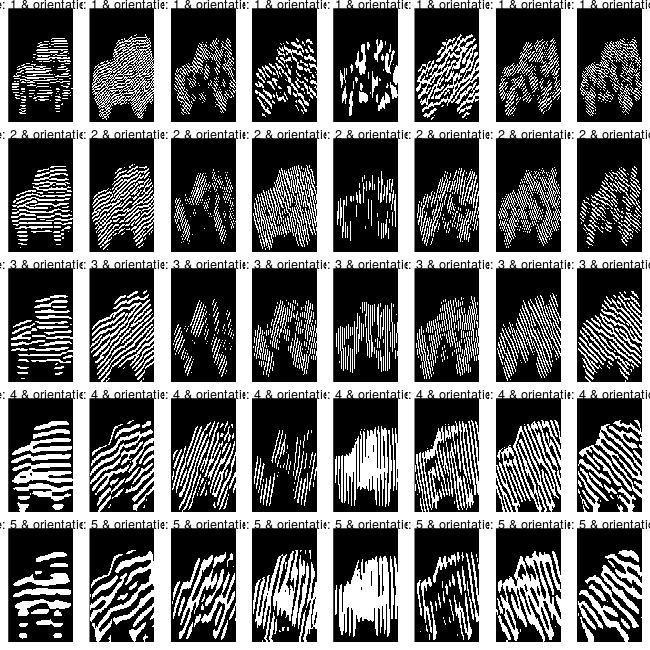

Gabor Feature extraction
Lampros Mouselimis
2021-09-01
Source:vignettes/Gabor_Feature_Extraction.Rmd
Gabor_Feature_Extraction.RmdIn this Vignette, I’ll illustrate the new functionality of the OpenImageR package (Gabor Feature Extraction). The Gabor features have been used extensively in image analysis and processing (Character and Face recognition). Gabor (Nobel prize winner, an electrical engineer, and physicist) used the following wording which I think it’s worth mentioning in this Vignette, “You can’t predict the future, but you can invent it.” (source).
In the following lines I’ll describe the GaborFeatureExtract R6 class which includes the following methods,
| GaborFeatureExtract |
|---|
| gabor_filter_bank() |
| gabor_feature_extraction() |
| gabor_feature_engine() |
| plot_gabor() |
These methods are based on the Matlab code Gabor Feature Extraction of the paper M. Haghighat, S. Zonouz, M. Abdel-Mottaleb, “CloudID: Trustworthy cloud-based and cross-enterprise biometric identification,” Expert Systems with Applications, vol. 42, no. 21, pp. 7905-7916, 2015, http://dx.doi.org/10.1016/j.eswa.2015.06.025. The initial Matlab code was modified (I added the Magnitude feature and the gabor_feature_engine() method) and parallelized using Rcpp wherever it was possible.
Gabor Features
I came across the Gabor Features last month when I had to process images and I needed an additional function besides the already existing HoG features. I did the regular search on CRAN (Comprehensive R Archive Network) but I couldn’t find anything related to Gabor Feature Extraction (as of August 2018), therefore I decided to port the Matlab code into R. There are many resources on the web if someone intends to deepen his / her knowledge on the subject and I’ll add some of these that I found useful at the end of the Vignette (References). I’ll explain the methods of the GaborFeatureExtract R6 class using an image found on a Stackoverflow question.

gabor_filter_bank
The gabor_filter_bank method “… generates a custom-sized Gabor filter bank. It creates a UxV cell array, whose elements are MxN matrices; each matrix being a 2-D Gabor filter” according to the author of the Matlab code. The following code chunk shows how this works in R,
library(OpenImageR)
init_gb = GaborFeatureExtract$new()
#------------------
# gabor-filter-bank
#------------------
gb_f = init_gb$gabor_filter_bank(scales = 5, orientations = 8, gabor_rows = 39,
gabor_columns = 39, plot_data = TRUE)
#-----------------------------------------------
# plot of the real part of the gabor-filter-bank
#-----------------------------------------------
plt_f = init_gb$plot_gabor(real_matrices = gb_f$gabor_real, margin_btw_plots = 0.65,
thresholding = FALSE)

For the gabor_filter_bank I use 5 scales and 8 orientations to build filters of size 39 x 39. The output of the method is a list of length 3,
str(gb_f)
List of 3
$ gaborArray :List of 40
..$ : cplx [1:39, 1:39] -1.58e-12-0.00i 0.00-5.02e-12i 1.50e-11-0.00i ...
..$ : cplx [1:39, 1:39] 4.86e-08-3.96e-08i 1.02e-07+4.63e-08i 6.31e-09+1.93e-07i ...
..$ : cplx [1:39, 1:39] 6.24e-06-6.24e-06i 1.18e-05+0.00i 1.10e-05+1.10e-05i ...
..$ : cplx [1:39, 1:39] -6.69e-05-3.18e-05i -4.63e-05-7.20e-05i -1.60e-06-9.81e-05i ...
..$ : cplx [1:39, 1:39] 1.40e-04+5.81e-05i 1.15e-04+1.15e-04i 6.68e-05+1.61e-04i ...
.......
$ gabor_imaginary:List of 40
..$ : num [1:39, 1:39] -4.65e-27 -5.02e-12 -1.10e-26 4.21e-11 -2.99e-25 ...
..$ : num [1:39, 1:39] -3.96e-08 4.63e-08 1.93e-07 1.53e-07 -3.04e-07 ...
..$ : num [1:39, 1:39] -6.24e-06 4.84e-20 1.10e-05 2.01e-05 1.81e-05 ...
..$ : num [1:39, 1:39] -3.18e-05 -7.20e-05 -9.81e-05 -9.58e-05 -5.78e-05 ...
..$ : num [1:39, 1:39] 5.81e-05 1.15e-04 1.61e-04 1.86e-04 1.83e-04 ...
.......
$ gabor_real :List of 40
..$ : num [1:39, 1:39] -1.58e-12 5.54e-27 1.50e-11 -4.12e-26 -1.11e-10 ...
..$ : num [1:39, 1:39] 4.86e-08 1.02e-07 6.31e-09 -2.85e-07 -4.28e-07 ...
..$ : num [1:39, 1:39] 6.24e-06 1.18e-05 1.10e-05 -8.11e-20 -1.81e-05 ...
..$ : num [1:39, 1:39] -6.69e-05 -4.63e-05 -1.60e-06 5.73e-05 1.12e-04 ...
..$ : num [1:39, 1:39] 1.40e-04 1.15e-04 6.68e-05 -3.77e-19 -7.57e-05 ...
.......The first sublist (gaborArray) consists of 40 matrices (5 scales x 8 orientations) of type complex, where each matix is of dimension 39 x 39 (gabor filter). The second sublist (gabor_imaginary) is the imaginary part (numeric) whereas the third sublist is the real part (gabor_real). The real part (numeric) is used to plot the gabor filters.
The documentation includes more details for each of the parameters used.
gabor_feature_extraction
The gabor_feature_extraction method extracts the Gabor Features of the image. This method is modified in comparison to the initial Matlab code to give users the option to downsample the image or to normalize the features. Moreover, I added the Magnitude feature because according to literature it improves predictability.
Based on the previously mentioned car.png image,
# read image
#-----------
pth_im = system.file("tmp_images", "car.png", package = "OpenImageR")
im = readImage(pth_im) * 255
# gabor-feature-extract
#----------------------
gb_im = init_gb$gabor_feature_extraction(image = im, scales = 5, orientations = 8,
downsample_gabor = FALSE, downsample_rows = NULL,
downsample_cols = NULL, gabor_rows = 39,
gabor_columns = 39, plot_data = TRUE,
normalize_features = FALSE, threads = 3)This function again returns a list of length 3,
str(gb_im)
List of 3
$ gaborFeatures :List of 2
..$ magnitude : num [1, 1:206670] 0 0 0 0 0 0 0 0 0 0 ...
..$ energy_aptitude: num [1, 1:80] 115823 27566 33289 20074 26918 ...
$ gabor_features_imaginary:List of 5
..$ : num [1:166, 1:249, 1:8] 0 0 0 0 0 0 0 0 0 0 ...
..$ : num [1:166, 1:249, 1:8] 0 0 0 0 0 0 0 0 0 0 ...
..$ : num [1:166, 1:249, 1:8] 0 0 0 0 0 0 0 0 0 0 ...
..$ : num [1:166, 1:249, 1:8] 0 0 0 0 0 0 0 0 0 0 ...
..$ : num [1:166, 1:249, 1:8] 0 0 0 0 0 0 0 0 0 0 ...
$ gabor_features_real :List of 5
..$ : num [1:166, 1:249, 1:8] 0 0 0 0 0 0 0 0 0 0 ...
..$ : num [1:166, 1:249, 1:8] 0 0 0 0 0 0 0 0 0 0 ...
..$ : num [1:166, 1:249, 1:8] 0 0 0 0 0 0 0 0 0 0 ...
..$ : num [1:166, 1:249, 1:8] 0 0 0 0 0 0 0 0 0 0 ...
..$ : num [1:166, 1:249, 1:8] 0 0 0 0 0 0 0 0 0 0 ...where gaborFeatures are the extracted features with number of rows equal to nrow(im) x ncol(im) (or 166 x 249) and number of columns equal to scales x orientations (or 5 x 8). The second and third sublists are the imaginary and real part of the image resulted after the convolution with the gabor filters. The following code chunk allows the user to plot the different scales and orientations of the image,
plt_im = init_gb$plot_gabor(real_matrices = gb_im$gabor_features_real,
margin_btw_plots = 0.65, thresholding = FALSE)
By thresholding the gb_im$gabor_features_real object (scales, orientations) to [0,1] the images can be visually explored,
# thresholding parameter is set to TRUE
#--------------------------------------
plt_im_thresh = init_gb$plot_gabor(real_matrices = gb_im$gabor_features_real,
margin_btw_plots = 0.65, thresholding = TRUE)
gabor_feature_engine
The gabor_feature_engine method is an extension of the initial Matlab code and allows the user to extract gabor features from multiple images. This method works in the same way as the HOG_apply method, which takes a matrix of images - such as the mnist data set - and after processing it returns the features. The following example illustrates how to use the gabor_feature_engine method with the mnist data set,
# for instance downloading of the mnist data on a linux OS
#----------------------------------------------------------
system("wget https://raw.githubusercontent.com/mlampros/DataSets/master/mnist.zip")
# or just navigate to "https://github.com/mlampros/DataSets/blob/master/mnist.zip" and click the download button
#-------------------------------------------------------------------------------------------
mnist <- read.table(unz("mnist.zip", "mnist.csv"), nrows = 70000, header = T,
quote = "\"", sep = ",")
mnist = as.matrix(mnist)
x = mnist[, -ncol(mnist)]
y = mnist[, ncol(mnist)] + 1
dat = init_gb$gabor_feature_engine(img_data = x, img_nrow = 28, img_ncol = 28,
scales = 4, orientations = 8, gabor_rows = 13,
gabor_columns = 13, downsample_gabor = FALSE,
downsample_rows = NULL, downsample_cols = NULL,
normalize_features = FALSE, threads = 6,
verbose = TRUE)
Time to complete : 4.111672 mins
> str(dat)
List of 2
$ magnitude : num [1:70000, 1:3136] 0 0 0 0 0 0 0 0 0 0 ...
$ energy_aptitude: num [1:70000, 1:64] 2682 2576 1399 1178 2240 ...The dat object is a list of length 2. The first sublist corresponds to magnitude whereas the second sublist to local-energy and mean-aptitude. The first thing to do before calculating the accuracy for the mnist data is to reduce the dimensionality of the magnitude feature (I’ll use the irlba package for this purpose),
svd_irlb = irlba::irlba(as.matrix(dat$magnitude), nv = 100, nu = 100, verbose = T)
new_x = as.matrix(dat$magnitude) %*% svd_irlb$v
and I’ll create a centered-scaled matrix of the reduced magnitude and the energy-aptitude data,
then I’ll utilize the nmslibR library (approximate method ‘hnsw’) to calculate the accuracy for the mnist data,
M = 30
efC = 100
num_threads = 6
index_params = list('M'= M, 'indexThreadQty' = num_threads, 'efConstruction' = efC,
'post' = 0, 'skip_optimized_index' = 1 )
efS = 100
query_time_params = list('efSearch' = efS)
fit_gab = nmslibR::KernelKnnCV_nmslib(dat, y, k = 20, folds = 4, h = 1,
weights_function = 'biweight_triangular_tricube_MULT',
Levels = sort(unique(y)), Index_Params = index_params,
Time_Params = query_time_params, space = "cosinesimil",
space_params = NULL, method = "hnsw",
data_type = "DENSE_VECTOR", dtype = "FLOAT",
index_filepath = NULL, print_progress = T,
num_threads = 6, seed_num = 1)
time to complete : 30.82252 secs
acc_fit_gab = unlist(lapply(1:length(fit_gab$preds),
function(x) {
mean(y[fit_gab$folds[[x]]] == max.col(
fit_gab$preds[[x]], ties.method = 'random')) }))
mean(acc_fit_gab)
[1] 0.9752714I’ll do the same using the HOG_apply function,
# hog-features for the mnist data
#--------------------------------
hog = OpenImageR::HOG_apply(x, cells = 6, orientations = 9, rows = 28, columns = 28, threads = 6)
fit_hog = nmslibR::KernelKnnCV_nmslib(hog, y, k = 20, folds = 4, h = 1,
weights_function = 'biweight_triangular_tricube_MULT',
Levels = sort(unique(y)), Index_Params = index_params,
Time_Params = query_time_params, space = "cosinesimil",
space_params = NULL, method = "hnsw",
data_type = "DENSE_VECTOR", dtype = "FLOAT",
index_filepath = NULL, print_progress = T,
num_threads = 6, seed_num = 1)
time to complete : 41.00309 secs
acc_fit_hog = unlist(lapply(1:length(fit_hog$preds),
function(x) {
mean(y[fit_hog$folds[[x]]] == max.col(
fit_hog$preds[[x]], ties.method = 'random')) }))
mean(acc_fit_hog)
[1] 0.9787429By averaging both the gabor and the HoG features the mean accuracy increases to 98.34 % which is very close to the score of the HoG + brute force method of KernelKnn (98.4),
acc_fit_gab_hog = unlist(lapply(1:length(fit_gab$preds),
function(x) {
mean(y[fit_gab$folds[[x]]] == max.col(
(fit_gab$preds[[x]] + fit_hog$preds[[x]]) / 2,
ties.method = 'random')) }))
mean(acc_fit_gab_hog)
[1] 0.9833857References :
- https://github.com/mhaghighat/gabor
- Gabor feature extraction Stackoverflow question
- Features Extraction using a Gabor Filter Family
- Gabor Feature Based Unsupervised Change Detection of Multitemporal SAR Images Based on Two-Level Clustering